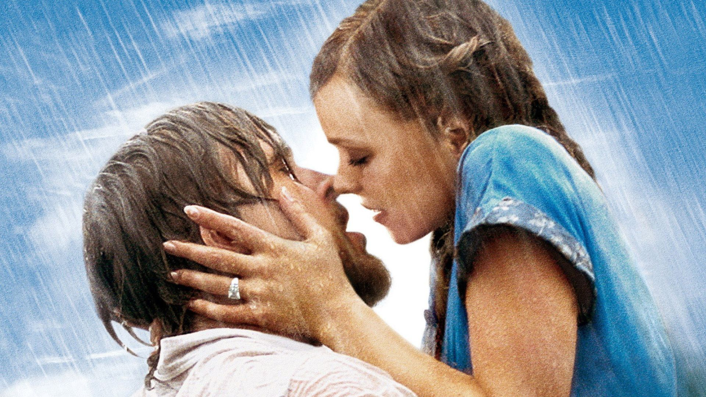

Recursos Recomendados
Doramas
Dorama é um termo japonês derivado de "drama" que se refere a séries e novelas televisivas asiáticas, originárias do Japão. Essas produções são conhecidas por suas tramas envolventes, personagens carismáticos, trilhas sonoras marcantes e, geralmente, contam histórias completas em uma única temporada curta, com começo, meio e fim bem definidos.
Saiba mais
Comedia romantica
Uma comédia romântica é um género de ficção, geralmente no cinema, que mistura elementos de comédia e romance, focado na jornada de um casal que, após superar obstáculos e situações cómicas, acaba por encontrar o amor e um final feliz. As histórias apresentam um enredo leve, com humor a avançar a narrativa, culminando num desfecho satisfatório para o público.
Saiba mais
Drama romance
Um drama romântico em filmes é um género que combina os elementos sérios e emocionais do drama com a história de amor do romance, explorando conflitos, obstáculos e a intensidade dos sentimentos entre os protagonistas. Ao contrário de romances mais leves, estes filmes apresentam desafios reais e dilemas emocionais profundos, focando na paixão, no sofrimento e nas complicações que impedem ou dificultam um amor verdadeiro.
Saiba mais